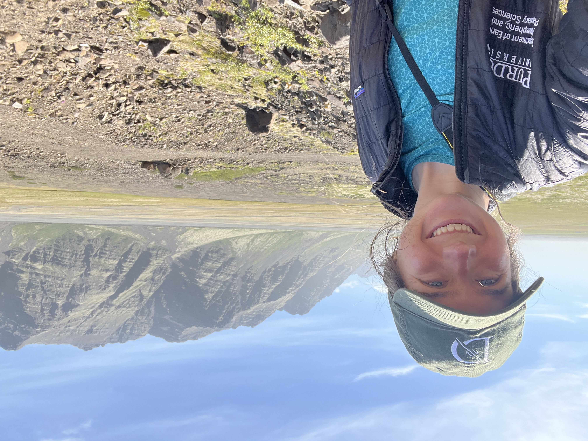

Nov 2025
Paper published in JGR: Planets
“Using Clast Morphometry to Reconstruct Basaltic Sediment Transport History.” Read the paper.

PhD Candidate in Earth Sciences at Dartmouth College, using Earth to read the history of Mars.
I am advised by Dr. Marisa Palucis in the Planetary Geomorphology Research Group. Before Dartmouth, I was an undergraduate researcher with Dr. Briony Horgan and Dr. Darryl Granger at Purdue University. My interests are terrestrial analogs, sedimentology, geomorphology, and science communication that bridges Earth and planetary sciences.
Formerly published as Emma R. Rogers.
“Using Clast Morphometry to Reconstruct Basaltic Sediment Transport History.” Read the paper.
Taught field methods to 25 students on a two-month traverse across the western U.S. and Canada (EARS 45–47).